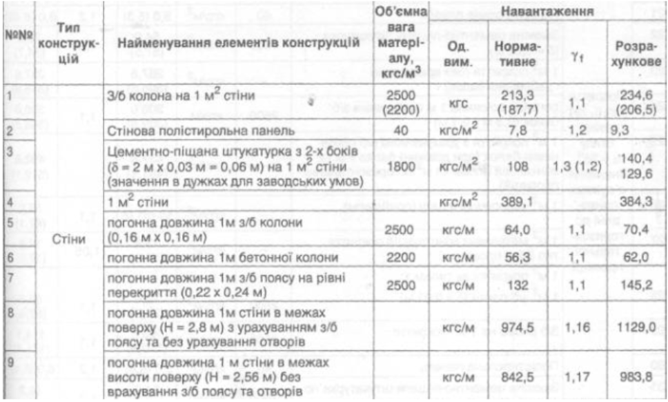

Необхідно описати веб-сторінку для конструкцій. Таблиця виглядає наступним чином
| № | Тип конструкцій | Найменування елементів конструкцій | Об'ємна вага матеріалу, кгс/м3 | Навантаження | |||
|---|---|---|---|---|---|---|---|
| Од. Вим. | Нормативне | Yf | Розрахункове | ||||
| 1 | Стіни | З/б колона на 1 м2 стіни | 2500 | кгс | 213,3 | 1,1 | 234,6 |
| 2 | Стінова палістирольна панель | 40 | кгс/м2 | 7,8 | 1,2 | 9,3 | |
| 3 | Цементно-піщана штукаторка з 2-х боків (d = 2m x 0,03m = 0,06m) на 1 м2 стіни (значення в дужках для заводських умов) | 1800 | кгс/м2 | 108 | 1,3 | 140,4 129,6 |
|
| 4 | 1 м2 стіни | кгс/м2 | 389,1 | 384,3 | |||
| 5 | Погонна довжина 1м з/б колони (0,16м х 0,16м) | 2500 | кгс/м | 64 | 1,1 | 70,4 129,6 |
|
| 6 | Погонна довжина 1м бетонної колони | 2200 | кгс/м | 56,3 | 1,1 | 62,0 | |
| 7 | Погонна довжина 1м з/б поясу на рівні перекриття (0,22 х 0,24м) | 2500 | кгс/м | 132 | 1,1 | 145,2 | |
| 8 | Погонна довжина 1м стіни у межах поверху (Н = 2,8м) з урахуванням з/б поясу та без урахування отворів | кгс/м | 974,5/th> | 1,16 | 1129,0 | ||
| 9 | Погонна довжина 1м стіни в межах висоти поверху (Н = 2,56м) без урахування з/б поясу та отворів | кгс/м | 842,5 | 1,17 | 983,8 | ||